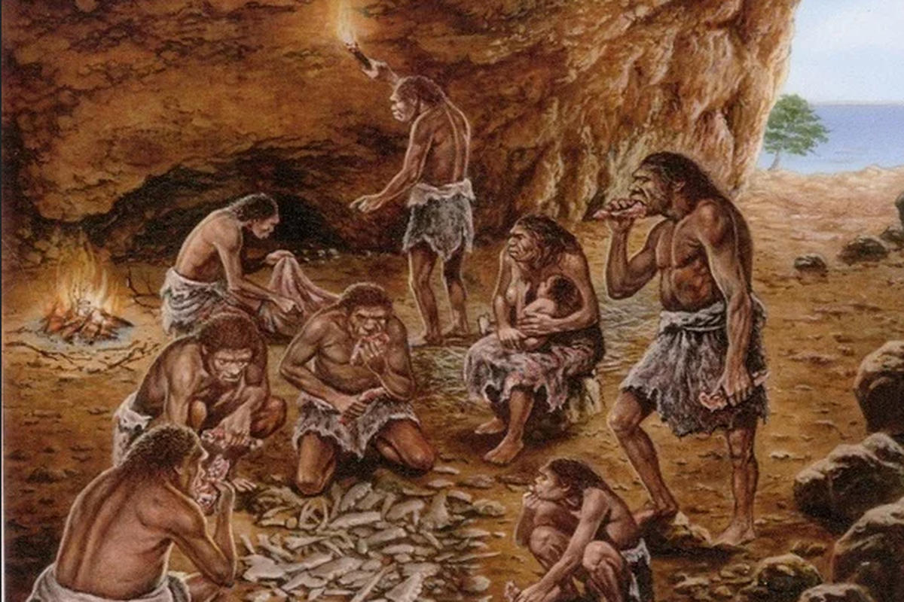
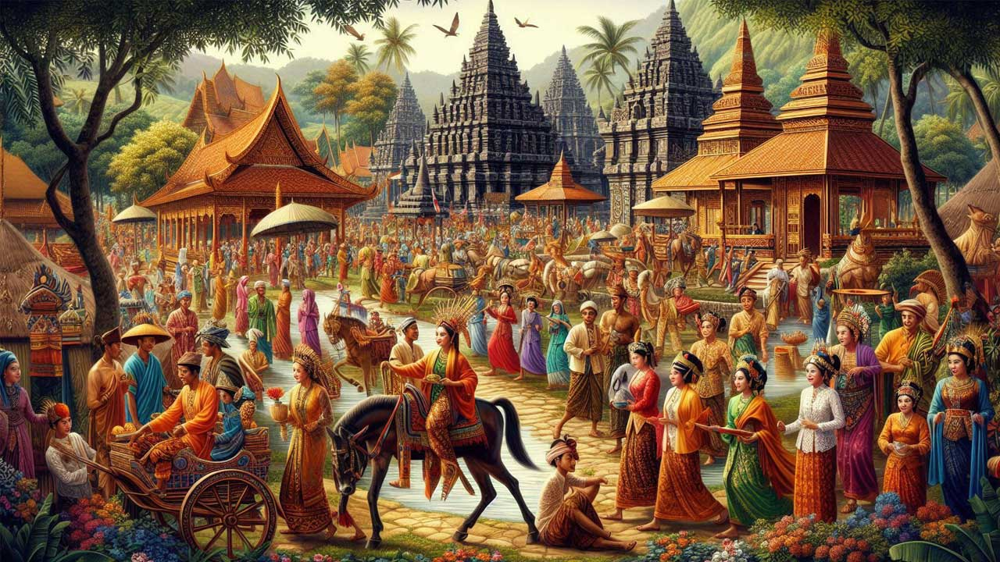
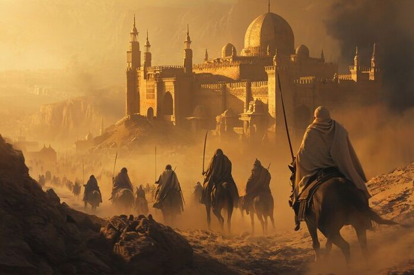
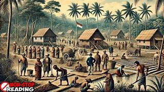
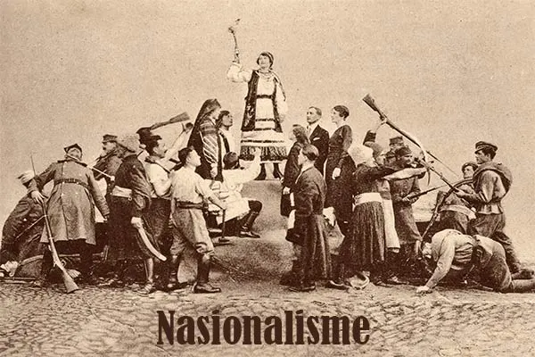
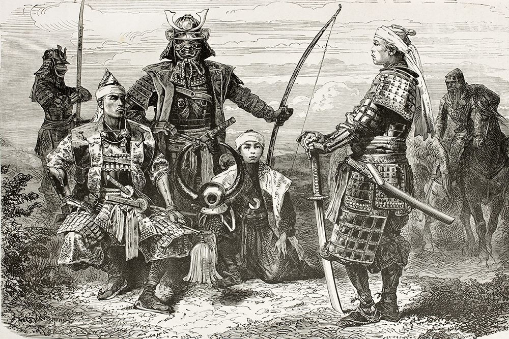
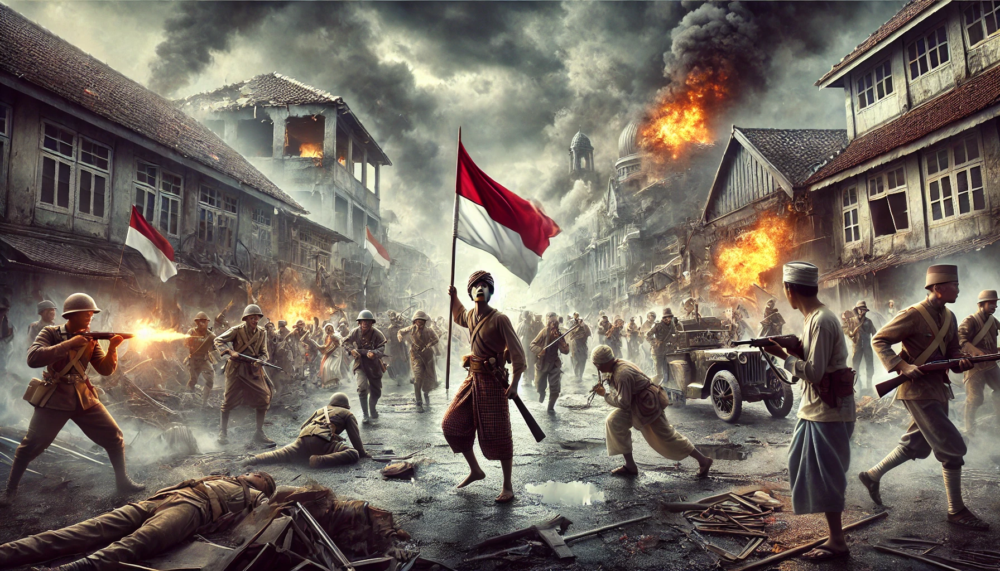

Jauh sebelum terbentuknya sistem pemerintahan modern, wilayah geografis yang kini kita kenal sebagai Kecamatan Purwadadi merupakan zona ekologis yang sangat vital. Secara geologis, wilayah Subang bagian tengah ini dialiri oleh beberapa aliran sungai purba yang membawa sedimen vulkanik subur dari pegunungan di bagian selatan Jawa Barat. Kondisi tanah yang sangat subur serta ketersediaan air yang melimpah menjadikan kawasan ini sebagai habitat ideal bagi flora dan fauna purba.
Berdasarkan kajian arkeologis di wilayah regional Subang, peradaban manusia di tempat ini bermula dari masa berburu dan meramu tingkat lanjut (Mesolitikum) hingga masa bercocok tanam (Neolitikum). Komunitas manusia purba memanfaatkan gua-gua alam dan wilayah tepian sungai sebagai tempat perlindungan. Ditemukannya berbagai perkakas batu seperti kapak persegi, beliung persegi, serta sisa-sisa gerabah kuno membuktikan adanya aktivitas domestifikasi dan pertanian awal yang terstruktur dengan baik.

Fajar sejarah tertulis di Jawa Barat ditandai oleh dominasi Kerajaan Tarumanegara pada abad ke-4 hingga ke-7 Masehi. Wilayah Purwadadi, yang terletak di antara jalur strategis pedalaman Jawa Barat dan pesisir utara, berada di bawah kendali pengaruh kebudayaan ini. Sungai Cipunagara yang mengalir di wilayah sekitar menjadi urat nadi transportasi penting yang menghubungkan pelabuhan kuno pesisir dengan pusat logistik pedalaman.
Setelah pudarnya pengaruh Tarumanegara, kepemimpinan wilayah beralih ke Kerajaan Sunda (Pajajaran). Pada era ini, Purwadadi berkembang sebagai wilayah agraris penyokong kebutuhan pangan kerajaan. Masyarakat lokal menerapkan sistem pertanian huma dan sawah basah tradisional yang sangat teratur. Hubungan erat dengan pusat kerajaan terjalin melalui upeti berkala berupa hasil bumi berkualitas tinggi, menunjukkan kepatuhan sekaligus kemakmuran sistem feodal Sunda kuno di kawasan ini.

Runtuhnya Kerajaan Pajajaran pada abad ke-16 memicu perubahan drastis pada peta politik dan spiritual di tanah Pasundan. Kekuatan baru dari Kesultanan Cirebon dan Kesultanan Banten mulai menyebarkan pengaruh keagamaan dan kekuasaan administratifnya hingga ke pelosok Subang. Purwadadi menjadi salah satu titik persinggahan penting bagi para ulama, juru dakwah, serta prajurit Islam yang melintas dari wilayah pesisir utara menuju dataran tinggi Priangan.
Proses islamisasi di Purwadadi berlangsung secara damai melalui pendekatan kultural yang memadukan tradisi lokal Sunda dengan nilai-nilai tauhid. Di masa ini, institusi tradisional seperti pesantren kuno dan langgar mulai bermunculan sebagai pusat pendidikan moral serta sosial masyarakat. Transformasi ini mengubah tatanan hukum adat setempat menjadi lebih selaras dengan syariat Islam, melahirkan masyarakat relijius yang menjunjung tinggi kebersamaan dan gotong-royong.

Sejarah Purwadadi mengalami pergeseran paling radikal di bawah kolonialisme Hindia Belanda dengan berdirinya perusahaan raksasa swasta asing *Pamanoekan en Tjiasemlanden* (P&T Lands). Hak kelola swasta atas tanah-tanah luas di kawasan Subang mengubah Purwadadi menjadi salah satu pusat industri perkebunan tebu, kopi, karet, dan perkebunan padi berskala raksasa. Pemerintah kolonial membangun infrastruktur masif berupa jaringan jalan raya dan kanal irigasi untuk mengeksploitasi hasil bumi secara maksimal.
Di satu sisi, pembangunan ini memperkenalkan modernisasi pertanian, teknologi penggilingan padi, serta tata ruang wilayah yang rapi. Namun di sisi lain, rakyat lokal dipaksa tunduk pada sistem kerja wajib yang eksploitatif dan pengenaan pajak tanah yang sangat memberatkan. Kontras sosial yang sangat tajam tercipta antara para administratur Eropa yang tinggal di rumah-rumah mewah bergaya kolonial, dengan para buruh tani pribumi yang hidup dalam belenggu kemiskinan dan penindasan sistem perkebunan partikelir.

Memasuki awal abad ke-20, penderitaan yang berkepanjangan melahirkan kesadaran kolektif untuk merdeka. Di bawah hembusan angin Kebangkitan Nasional, para pemuda revolusioner dan tokoh masyarakat Purwadadi mulai mendirikan cabang-cabang organisasi pergerakan nasional seperti Sarekat Islam (SI) dan Paguyuban Pasundan. Pertemuan-pertemuan rahasia sering kali digelar di tengah perkebunan dan rumah-rumah penduduk untuk menghindari intelijen militer Belanda.
Gerakan boikot pajak dan aksi mogok kerja para buruh perkebunan padi sering kali dikoordinasikan secara taktis. Purwadadi menjadi zona yang sangat rawan bagi para tuan tanah kolonial karena keberanian rakyatnya yang mulai menuntut hak kepemilikan tanah kembali. Semangat perjuangan ini terus dipupuk melalui surat kabar perjuangan yang disebarkan secara sembunyi-sembunyi, mempersiapkan mental rakyat menghadapi pergolakan politik global yang akan segera datang.

Kejutan sejarah terjadi pada Maret 1942 ketika armada militer Kekaisaran Jepang mendarat secara masif di pangkalan udara Kalijati, Subang. Hanya dalam hitungan hari, kekuasaan kolonial Belanda runtuh total dan digantikan oleh kediktatoran militer Jepang. Wilayah Purwadadi segera berubah fungsi menjadi pemasok logistik militer utama bagi perang Asia Timur Raya. Seluruh lumbung padi diawasi ketat dan hasilnya disita untuk keperluan pangan tentara Jepang.
Pada masa pendudukan Jepang, rakyat Purwadadi dipaksa menjalani kerja paksa (Romusha) untuk membangun pertahanan militer di berbagai daerah. Namun, ada dampak militerisasi positif di mana para pemuda setempat dilatih secara taktis di dalam organisasi semi-militer bentukan Jepang seperti PETA (*Pembela Tanah Air*), Seinendan, dan Keibodan. Pelatihan disiplin tempur dan taktik gerilya inilah yang nantinya menjadi modal berharga bagi para pemuda Purwadadi untuk angkat senjata merebut kemerdekaan penuh.

Pasca berkumandangnya Proklamasi Kemerdekaan 17 Agustus 1945, perjuangan belumlah usai. Pasukan Sekutu dan NICA (Belanda) mencoba merebut kembali wilayah Jawa Barat. Rakyat Purwadadi bersama barisan pejuang bersenjata terlibat dalam berbagai pertempuran sengit mempertahankan kedaulatan wilayah sepanjang Agresi Militer Belanda I dan II. Kawasan persawahan dan perkebunan karet Purwadadi menjadi medan perang gerilya yang menguras tenaga musuh.
Setelah pengakuan kedaulatan penuh oleh Belanda pada tahun 1949, struktur wilayah Indonesia mulai ditata kembali secara berdaulat. Berdasarkan ketetapan administrasi daerah pasca-kemerdekaan, Purwadadi resmi disahkan sebagai unit pemerintahan Kecamatan yang mandiri di bawah naungan Kabupaten Subang. Kini, wilayah yang tangguh ini terus bertransformasi dari pusat agraris lumbung padi legendaris menjadi kawasan industri dan pemukiman modern tanpa melupakan nilai historis perjuangan para leluhurnya.
